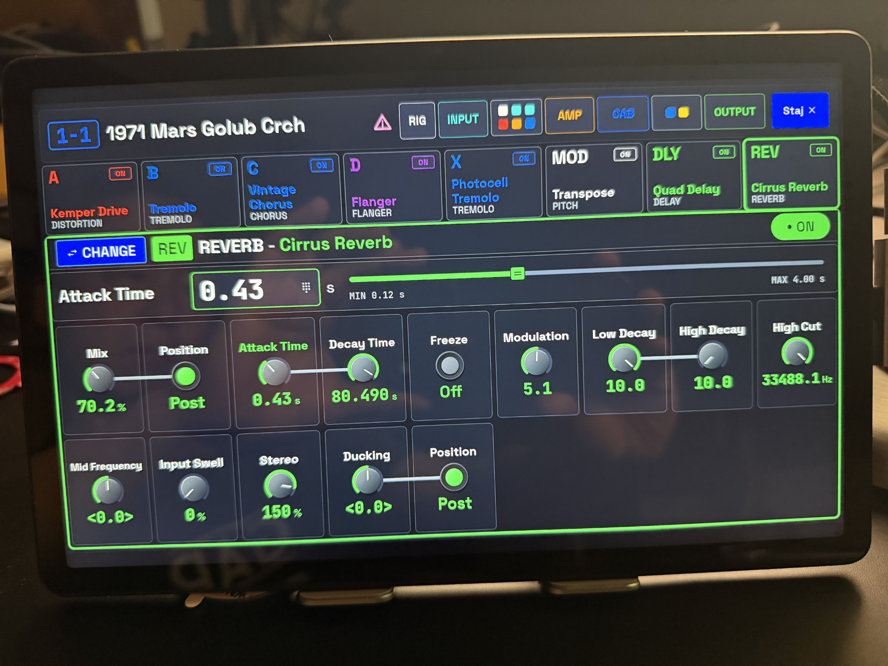
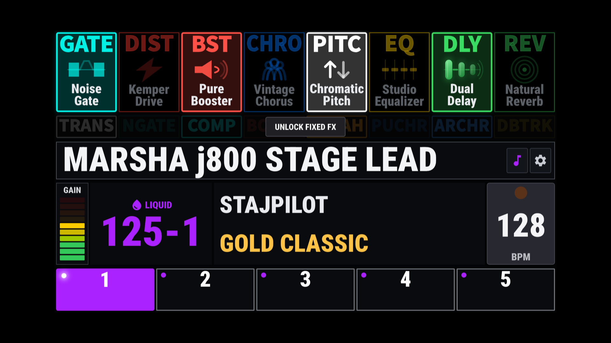
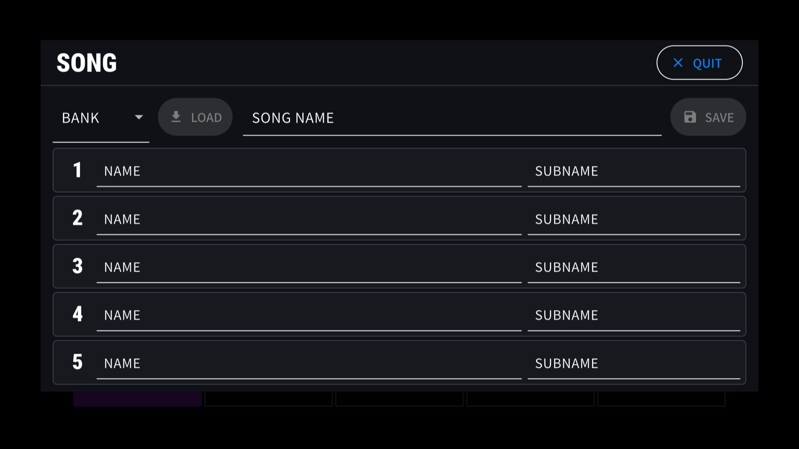
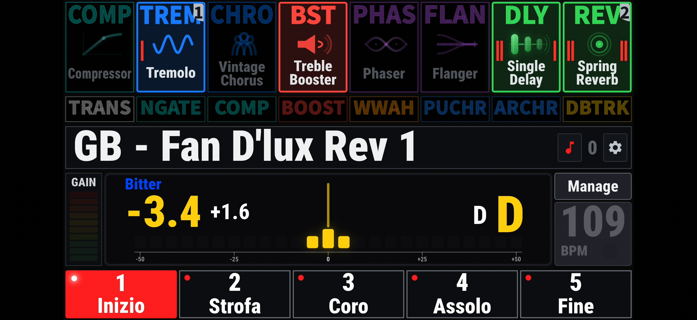

Stage 2 / Version 2.0.0
StajPilot
STAJ for performance. PILOT for editing.

Your KEMPER PROFILER, on a screen you can see and touch. Control your performance, edit your sound, and tune your way on iPhone, iPad, and Android.
PLAYER · STAGE · HEAD / TOASTER · RACK · MK1 / MK2
Stage 2 launch special US$29.99 One purchase. No subscription. Free updates for existing purchasers.
Stage 2 features require version 2.0.0. Update availability and local prices can vary by store and country. Please check the version shown in your store.
New in Stage 2
PILOT mode. Edit your sound.
Go beyond the performance display. Select an effect, choose its type or preset, and adjust its parameters with knobs, switches, selectors, or precise numeric input.
More than effect editing
Work with Effects, Rig, Input, Fixed FX, Amp, Cabinet, and Output. Available controls follow your Profiler model and, for Player, its Level.
Details within reach
Color-coded values, linked parameter groups, and a focused adjustment area keep complex effects readable. Use the Change selector to navigate effect families, types, and available presets.
PILOT mode is available with Player and supported MK1/MK2 Performance Mode setups. It is unavailable in Browser Mode.
STAJ mode / On stage
Your songs. Your names. Your performance.
Song Mode works with Player banks and the Performance slots of the larger PROFILER models. Keep the hardware connection, and give each song and slot names that make sense to you.


Select. Long-press. Edit.
Browse up to 125 songs in Song Select, with 25 shown at a time. Long-press a song to edit it directly. Multilingual names and emoji are stored locally, without extra name queries to the Profiler.
Edit on your computer, too
The web Song Editor lets you edit your exported Song file, organize song and slot names, and manage amp-image assignments. Export the result and import it back into the app. Your original Profiler rig names are not replaced.
Open the web Song EditorBack up and import Song data between editing sessions. Amp images will also be provided as gifts with periodic updates.
New in Stage 2
Custom Tuner. Your tuning reference.
Save three custom profiles and name them your way. Set an offset for each open string, E A D G B E, from -15.0 to +15.0 cents in 0.1-cent steps.

Custom tuning applies to Needle mode. Keep Standard tuning when you want it, choose the cents display precision, or use the full-screen tuner for a larger view. Strobe remains available for Standard tuning.
Watch the Custom Tuner demonstrationBefore you edit in PILOT mode
Please read before your first edit.
To keep your changes, press STORE on the KEMPER itself.
- Set your device first. Select the correct Player, MK1, or MK2 profile in Settings. Player users must also select the correct Level.
- Validation is ongoing. Extensive checks have been completed, but not every value has been fully verified. Some displayed values may still differ from the Profiler.
- Avoid editing from both places at once. PILOT combines incoming MIDI with targeted queries and polling to reduce unnecessary device load. It is not fully bidirectional; avoid adjusting the Profiler's own controls while editing in PILOT mode.
- Help us verify the details. If a value differs by more than 1%, or a control behaves incorrectly, email sk5054@hotmail.com with screenshots and a detailed explanation.
StajPilot communicates with the Profiler through USB MIDI. It does not intercept proprietary, non-MIDI communication protocols.
Choose your Profiler
Player
Navigate banks and rigs, use Song Mode, and edit in PILOT mode. Set your Player Level so available blocks, effects, and controls match your device.
Stage, Head (Toaster) & Rack
Select MK1 or MK2 in Settings. Use Performance names and five slots, Song Mode, and supported PILOT editing. Browser Mode provides rig navigation in STAJ mode; PILOT editing is disabled.
Physically tested with PROFILER Player LV3 and Stage MK1. MK2 mode is included but has not yet been tested on a physical MK2. Features vary by model and mode.
Connect your phone or tablet
External Bluetooth MIDI pedal support is currently limited to M-VAVE Chocolate on iOS and Android. This does not replace the USB MIDI connection to the Profiler.
No account, sign-in, subscription, or internet connection is required to use StajPilot. Connection options depend on your phone or tablet and the Profiler's USB ports; see the platform guides before connecting.
StajPilot is an independent third-party application and is not affiliated with or endorsed by Kemper GmbH.
Compatibility and proper operation with KEMPER PROFILER devices are not guaranteed. Changes to device hardware, firmware, communication protocols, or operating systems may affect, limit, or discontinue some or all functionality. Test your full setup before using it at an important event.
KEMPER and PROFILER are trademarks of Kemper GmbH. All other trademarks belong to their respective owners.
StajPilot은 독립적으로 개발된 서드파티 애플리케이션이며 Kemper GmbH와 제휴하거나 공식 승인을 받은 제품이 아닙니다. KEMPER PROFILER 기기와의 호환성 및 정상 작동은 보증되지 않습니다. 장치의 하드웨어, 펌웨어, 통신 프로토콜 또는 운영체제 변경에 따라 일부 또는 전체 기능이 제한되거나 중단될 수 있습니다. 중요한 행사 전에 전체 연결 구성을 충분히 테스트해 주세요. KEMPER와 PROFILER는 Kemper GmbH의 상표이며, 기타 모든 상표는 각 권리자에게 귀속됩니다.